Boîte à outils de suivi de la restauration
Un établi d’aide à la décision pour le diagnostic, le ciblage, la conception, le suivi et le reporting, fondé sur des indicateurs harmonisés et des analyses spatiales de pointe.
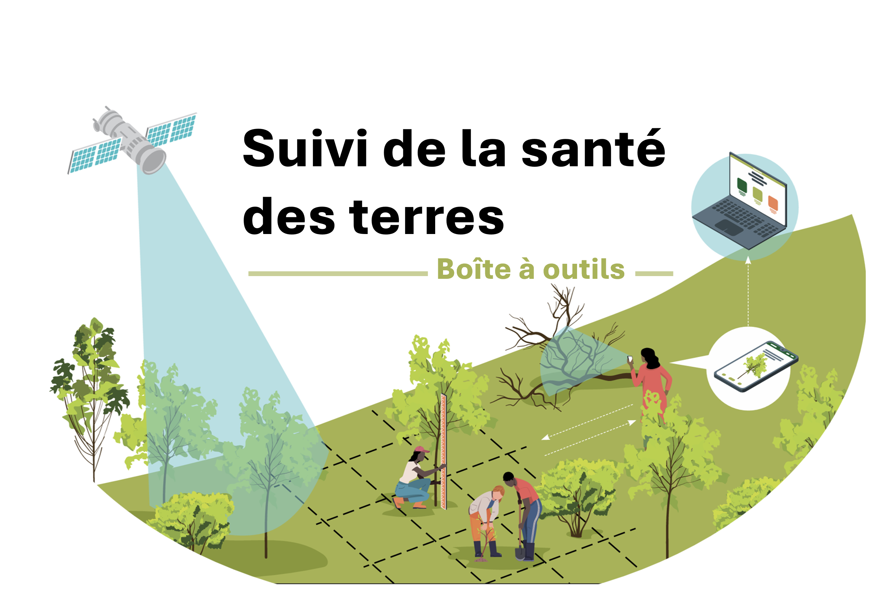
Le diagnostic paysager est la base d’une planification de la restauration efficace. Il est essentiel de comprendre l’état actuel des terres, les processus de dégradation et les facteurs de stress climatiques avant de décider où et comment intervenir.
Plutôt que de s’appuyer sur un seul indicateur proxy de la santé des terres, le diagnostic intègre plusieurs indicateurs (état des sols, prévalence de l’érosion, dynamique de la végétation, variabilité climatique, etc.) afin de mieux saisir les différentes dimensions du fonctionnement des écosystèmes et de leur vulnérabilité.
Cette approche multi-indicateurs permet d’analyser les tendances et motifs à l’échelle du paysage au fil du temps, de distinguer la dégradation de long terme de la variabilité de court terme, et d’établir une ligne de base défendable à partir de laquelle mesurer les changements futurs.
Pourquoi les preuves spatiales comptent à cette étape
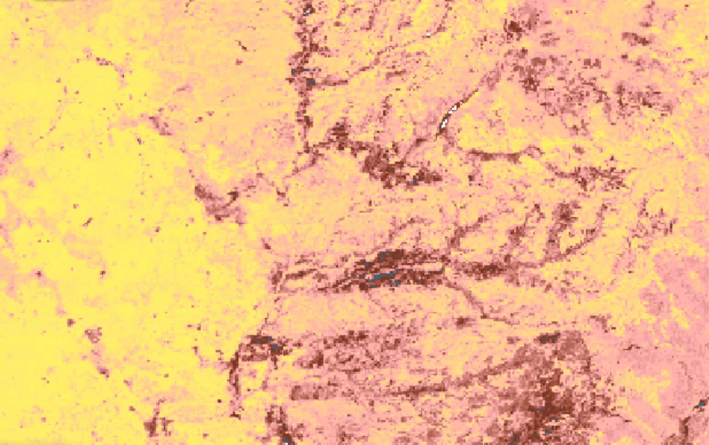
Les conditions du paysage peuvent varier fortement dans l’espace. Les cartes permettent d’identifier des motifs, gradients ou contraintes potentielles qui restent invisibles dans des statistiques agrégées ou lorsqu’on n’utilise qu’un seul type d’indicateur. Comprendre les motifs et conditions à l’échelle du paysage est crucial pour les décisions en aval en matière de gestion des risques, de ciblage des sites et de conception des interventions.
À qui cela sert
État des Terres
Rapport interactif guidant le lecteur dans l’interprétation de différents indicateurs spatiaux (climat, santé des sols, dynamique de la végétation et dégradation) pour la région de la GMV.
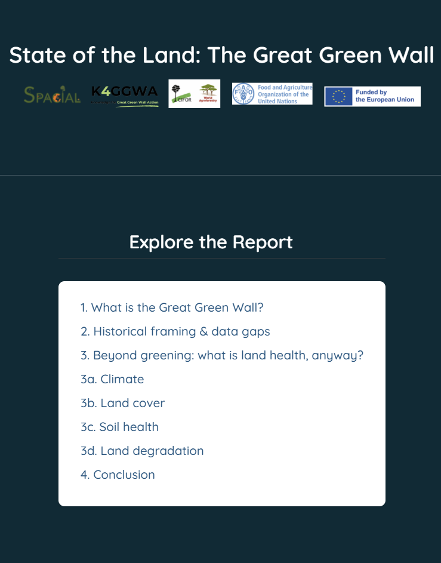
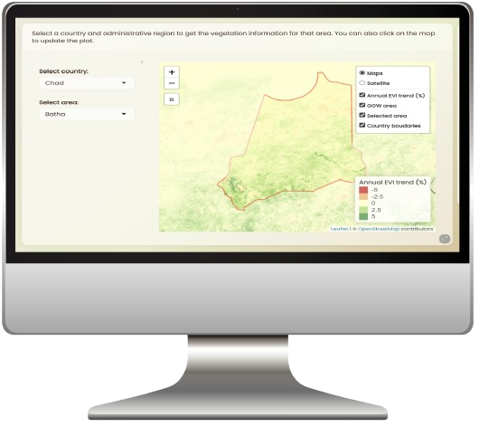
Explorer interactivement et à différentes échelles le COS, le risque d’érosion, la dynamique de la végétation et les paramètres climatiques.
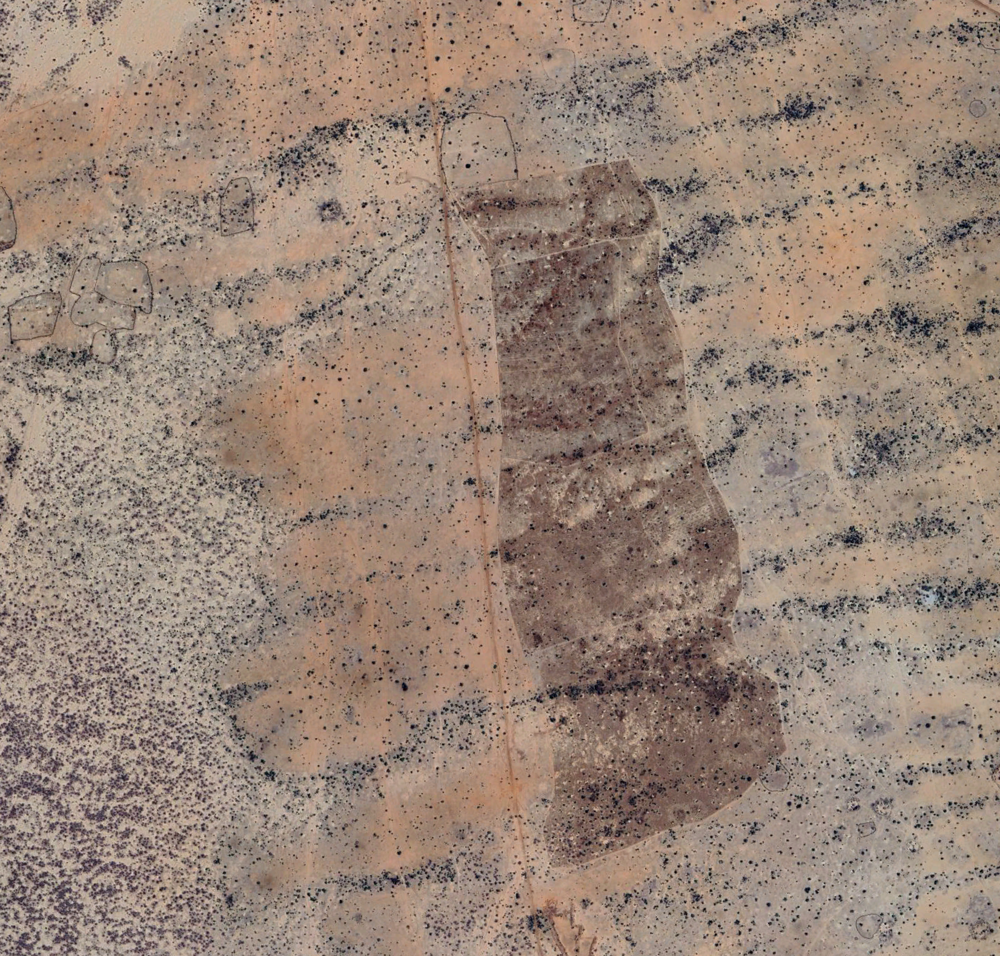
Ce que signifie chaque indicateur, comment l’interpréter et les points d’attention (échelle, incertitude, seuils).
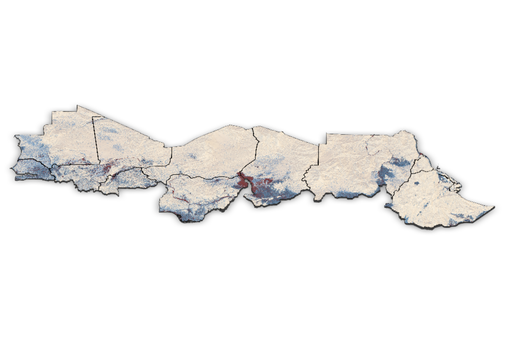
Explorer des cartes fines des risques d’inondation et de sécheresse dans la région de la GMV.
Le ciblage transforme le diagnostic paysager en décisions actionnables sur les lieux où les efforts de restauration ont le plus de chances de réussir et d’avoir un impact.
La priorisation consiste à sélectionner des emplacements où les processus de dégradation, le potentiel biophysique et/ou le contexte socio-économique s’alignent avec des objectifs de restauration précis et où l’on peut attendre des retours optimaux.
En combinant indicateurs spatiaux et seuils, le ciblage permet d’identifier les zones où le levier d’intervention est élevé, par rapport à celles où les risques, coûts ou incertitudes peuvent dépasser les bénéfices attendus. Les cartes aident à ancrer — et parfois à quantifier — ces décisions.
Pourquoi les preuves spatiales comptent à cette étape
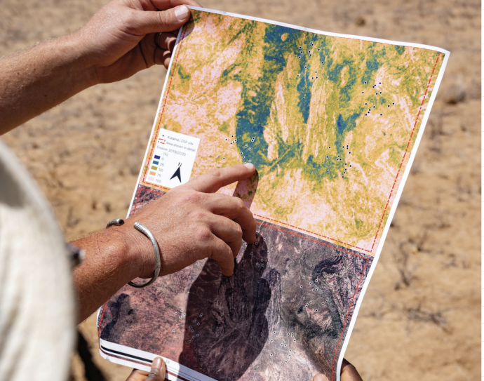
Le ciblage et la priorisation nécessitent de traduire les objectifs du projet en critères spatiaux afin d’identifier les zones où les interventions ont le plus de chances de réussir. Par exemple, si l’objectif est de réduire l’érosion des sols et d’améliorer la fertilité et la capacité de rétention d’eau, des cartes de « hotspots » permettent de visualiser et de quantifier où l’érosion est élevée et où la fertilité/rétention d’eau sont faibles. Les décideurs peuvent ainsi mettre en balance plusieurs considérations — faisabilité, risques, retours et compromis — tout en restant transparents sur les hypothèses et les incertitudes.
À qui cela sert
Tableaux de bord K4GGWA
Analyses paysagères pour la région de la GMV couvrant le risque climatique, la santé des terres, la dynamique de la végétation et la biodiversité.
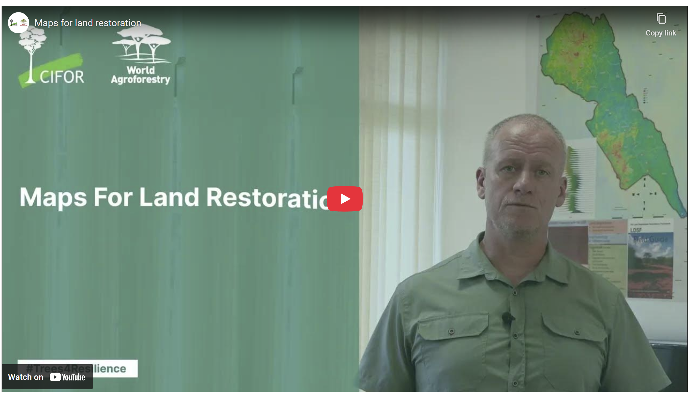
Vidéo explicative sur l’utilisation des cartes et des données spatiales pour éclairer la planification de la restauration.
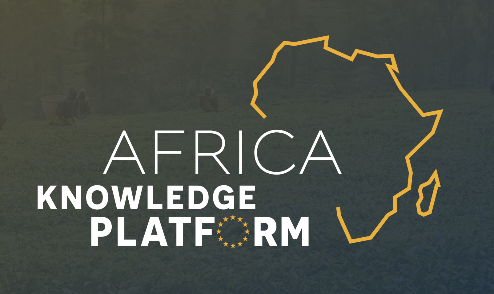
Explorer des jeux de données et des outils thématiques à l’échelle du continent africain.
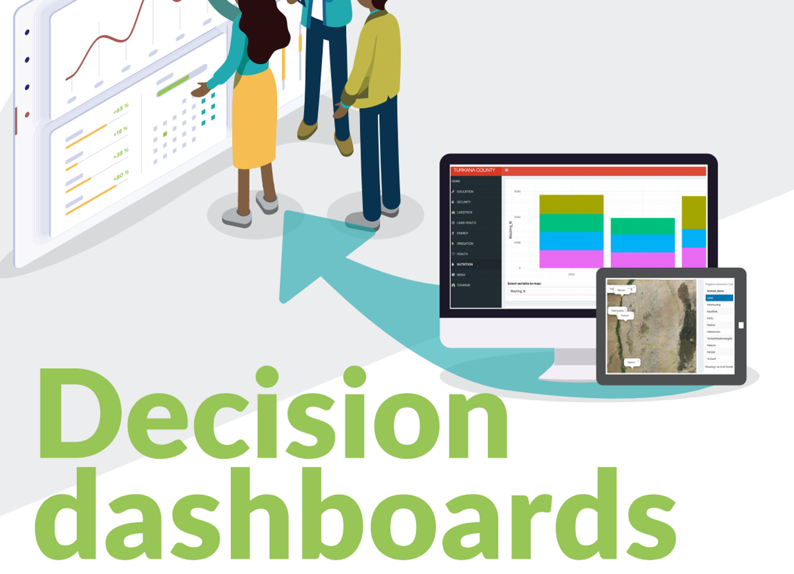
Note d’information décrivant ce que sont les « decision dashboards » et comment ils peuvent soutenir la prise de décision et la planification fondées sur des preuves.
La conception des interventions consiste à décider quelles actions de restauration sont adaptées à un lieu donné, une fois les zones prioritaires identifiées.
Une conception efficace reconnaît que la restauration dépend du contexte. Le climat, les sols, l’occupation des terres, les processus de dégradation et les pratiques locales de gestion influencent les interventions faisables, durables et susceptibles de produire des résultats positifs.
Relier les preuves spatiales à des choix de conception concrets permet d’éviter les décalages entre ambition et contexte, de soutenir une planification réaliste et de réduire le risque d’échec pendant la mise en œuvre.
Pourquoi les preuves spatiales comptent à cette étape
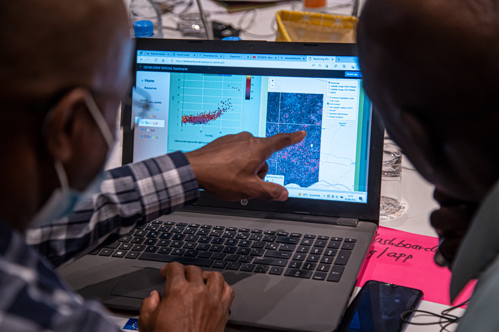
Les cartes aident à déterminer où différentes pratiques de restauration et espèces sont écologiquement adaptées. Par exemple : orienter la plantation d’arbres vers des zones aux pluies suffisantes et aux sols appropriés ; informer le choix d’espèces via des cartes de distribution et d’aptitude ; ou indiquer où la régénération naturelle assistée par les paysans (FMNR) et les pratiques de conservation des eaux et des sols sont plus adaptées que la plantation. En rendant explicites contraintes, risques et opportunités, les données spatiales aident à concevoir des projets faisables, optimisant les retours sur investissement, et transparents sur les hypothèses et les compromis.
À qui cela sert
Application Africa Tree Finder
Application simple d’utilisation présentant la distribution d’espèces d’arbres indigènes dans différents types de végétation naturelle, avec des informations sur les produits et services qu’elles peuvent fournir. Elle aide les praticiens à sélectionner les espèces les plus adaptées pour leurs efforts de restauration des paysages et d’agroforesterie.
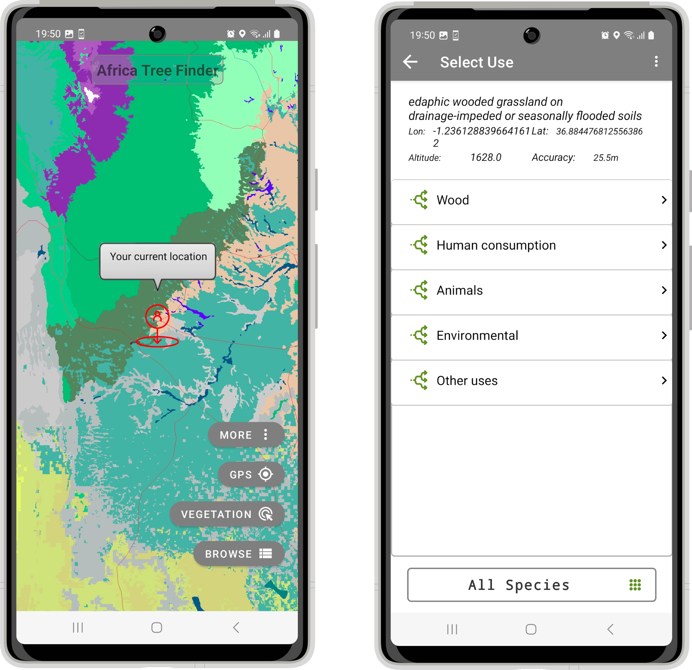
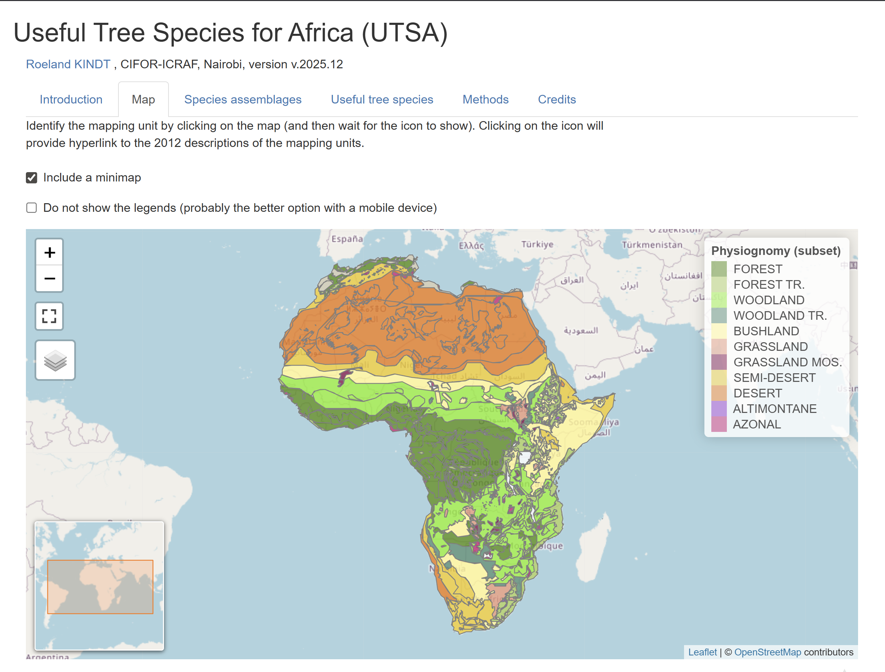
Application web de sélection d’espèces pour filtrer les espèces d’arbres adaptées aux projets de restauration basés sur l’arbre.
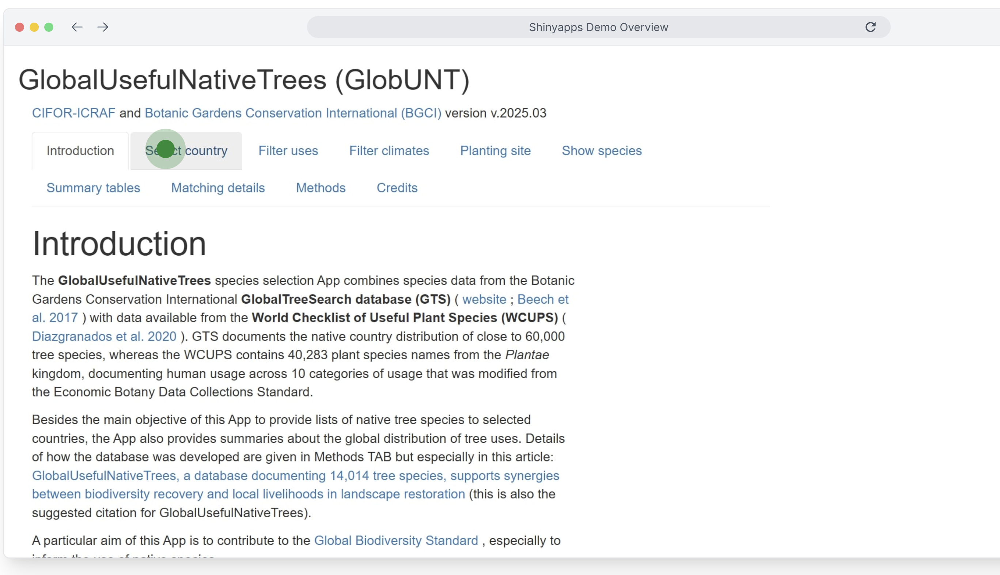
Tutoriel pour sélectionner des espèces d’arbres selon l’usage souhaité et l’aptitude au contexte écologique local.
Explorer interactivement et à différentes échelles le COS, le risque d’érosion, la dynamique de la végétation et les paramètres climatiques.
Le suivi vise à comprendre comment les paysages évoluent après les interventions de restauration et si les tendances observées correspondent aux attentes et aux objectifs.
Plutôt que de s’appuyer sur des mesures ponctuelles, un suivi efficace utilise des analyses de séries temporelles pour distinguer un changement réel de la variabilité saisonnière, des fluctuations liées au climat, du bruit à court terme et d’autres facteurs de confusion.
En intégrant les résultats du suivi dans une gestion adaptative, les praticiens peuvent affiner les interventions et répondre aux risques émergents, améliorant les résultats au fil du temps.
Pourquoi les preuves spatiales comptent à cette étape
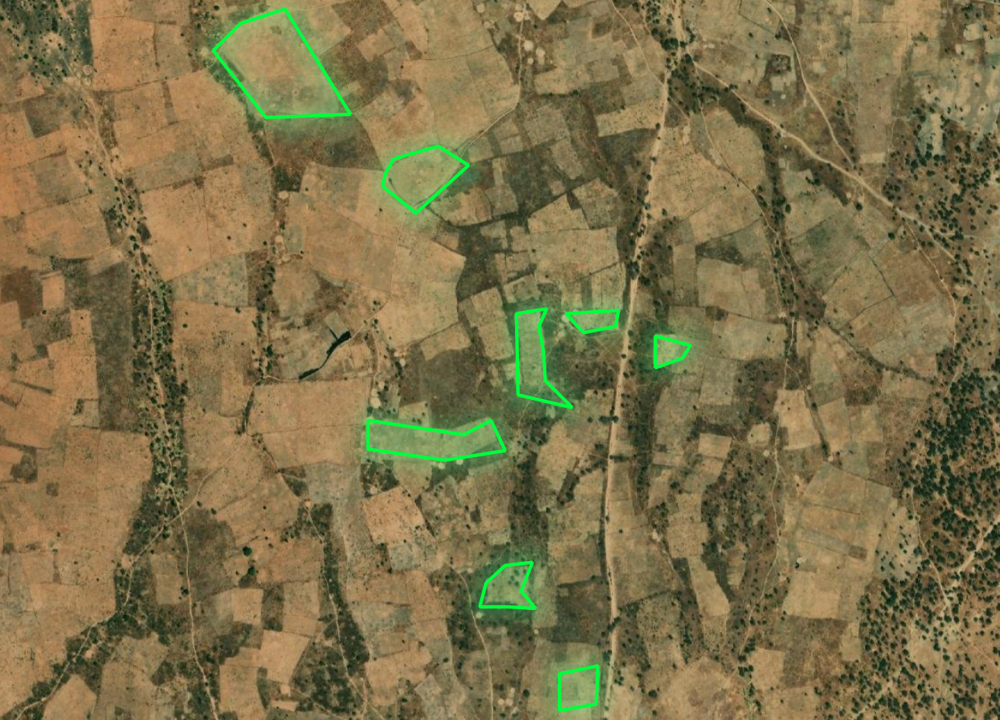
Le suivi et la gestion adaptative reposent sur la compréhension des changements au fil du temps. Des indicateurs spatialement explicites permettent de suivre des tendances de manière cohérente à l’échelle des paysages, de les comparer aux lignes de base pré-intervention, et de les interpréter dans le contexte de la variabilité climatique et d’autres facteurs de confusion. Cela permet de distinguer des signaux réels de rétablissement ou de déclin du bruit de court terme, et d’ajuster les actions au fur et à mesure de l’avancement du projet.
À qui cela sert
Regreening App
Application Android gratuite, conçue pour la collecte de données de science citoyenne à l’échelle de la ferme sur les pratiques de restauration. Les modules couvrent la plantation d’arbres, la FMNR, la gestion des parcours, les pépinières et l’engagement.

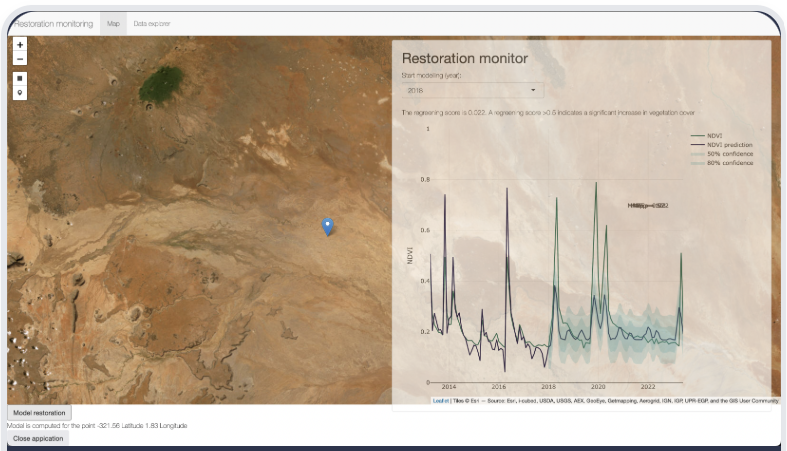
Outil de suivi qui permet de visualiser des tendances de verdissement anormales dans les sites d’intervention.
Explorer interactivement et à différentes échelles le COS, le risque d’érosion, la dynamique de la végétation et les paramètres climatiques.
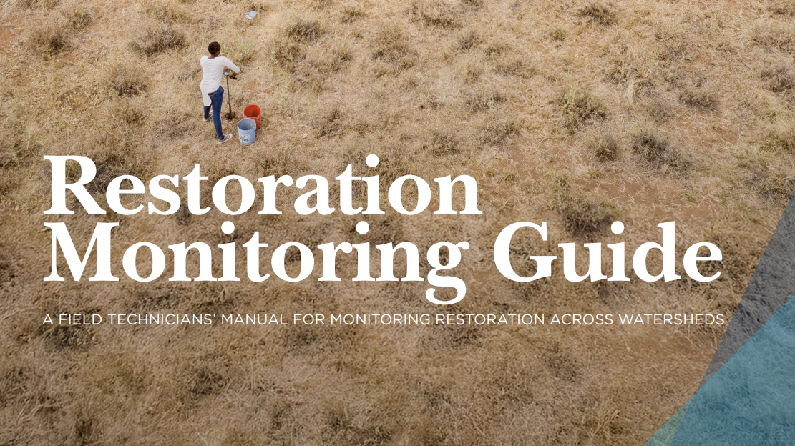
Manuel de terrain pour techniciens sur le suivi de la restauration à l’échelle des bassins versants
Le reporting vise à transformer les preuves issues du suivi en livrables clairs et crédibles, afin d’assurer la redevabilité envers les bailleurs, les gouvernements et les parties prenantes.
Un reporting efficace synthétise plusieurs lignes de preuves en récits cohérents qui expliquent ce qui a changé, où, et pourquoi cela compte.
Combiné à un apprentissage structuré, le reporting soutient aussi l’amélioration continue : il aide les organisations à affiner leurs stratégies, comparer les approches et amplifier ce qui fonctionne à travers les paysages et les programmes.
Pourquoi les preuves spatiales comptent à cette étape
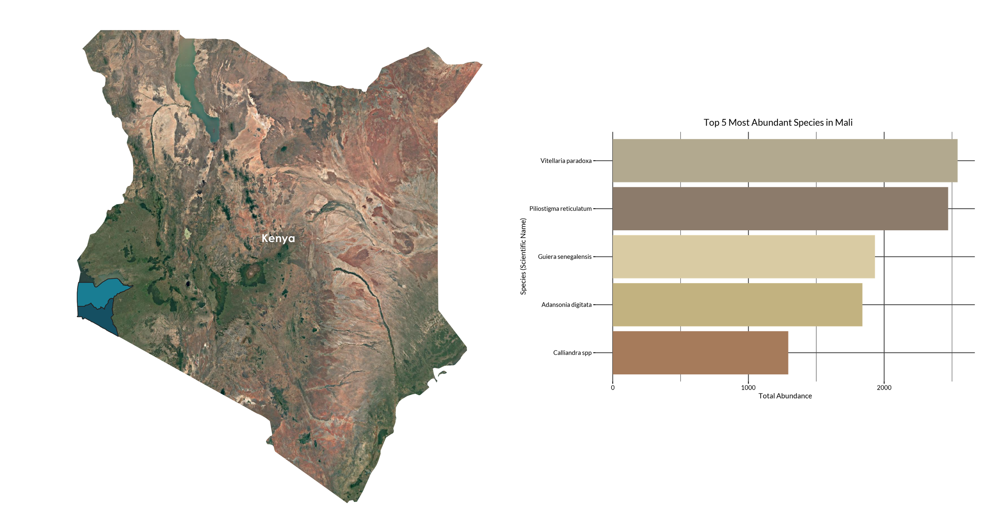
Le reporting est l’étape où les preuves sont consolidées, communiquées et rendues redevables. Des indicateurs spatialement explicites permettent une agrégation cohérente entre projets et régions, liée à des lignes de base convenues et interprétée avec des incertitudes appropriées.
Cela permet de rapporter les résultats et les progrès de manière transparente, quantitative et alignée avec les cadres de reporting nationaux, régionaux et des bailleurs.
À qui cela sert
Tableaux de bord K4GGWA
Analyses paysagères pour la région de la GMV couvrant le risque climatique, la santé des terres, la dynamique de la végétation et la biodiversité.
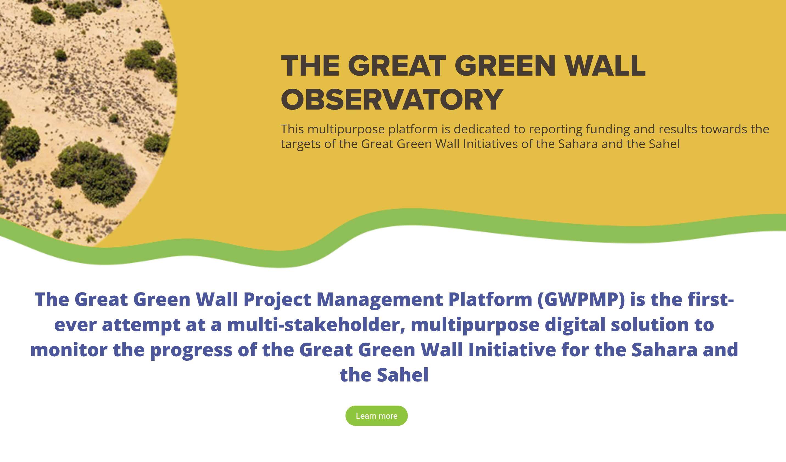
Plateforme polyvalente dédiée au reporting des financements et des résultats vers les objectifs de l’Initiative Grande Muraille Verte du Sahara et du Sahel.
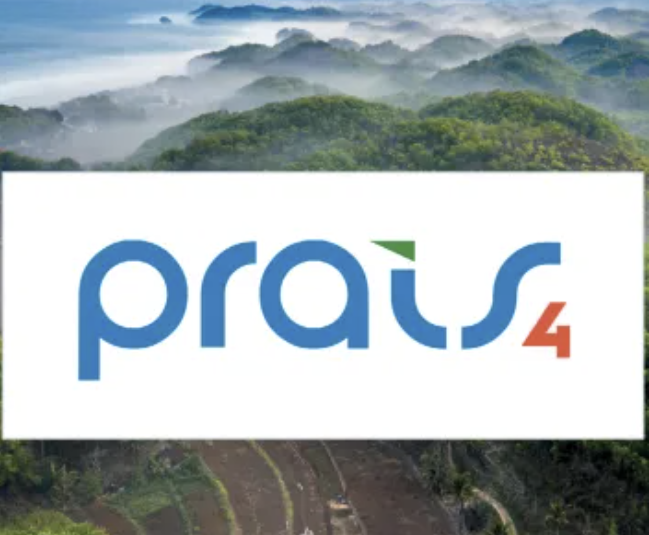
Plateforme du système national de reporting de l’UNCCD.
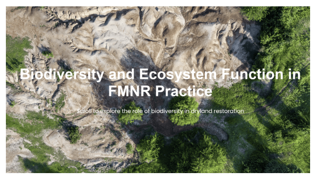
Des exemples concrets reliant les preuves aux résultats, aux leçons apprises et aux réalités vécues.
En savoir plus

Découvrir comment les cartes prédictives sont produites, de la collecte de données brutes sur le terrain jusqu’aux analyses et aux résultats.

En savoir plus sur les fonctionnalités de cet outil de collecte de données de science citoyenne pour le suivi des projets de restauration.

En savoir plus sur le Land Degradation Surveillance Framework — le protocole d’échantillonnage à l’origine de la plus grande bibliothèque systématique et géoréférencée au monde de spectres infrarouges de sols.